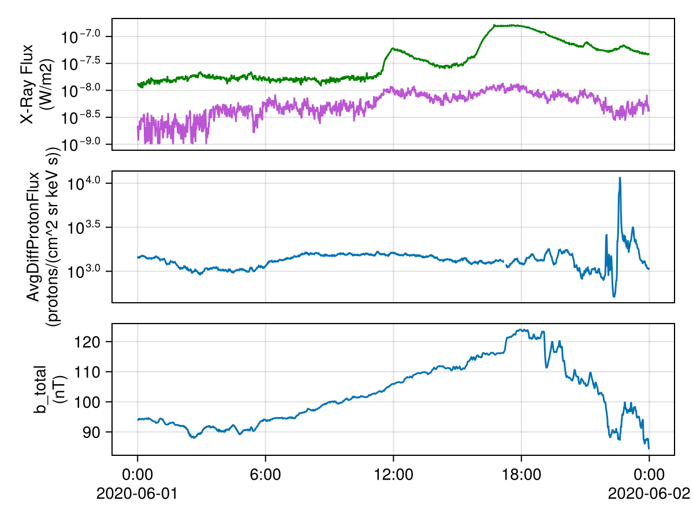

Reading and Plotting GOES-R XRS Data
Example for reading and plotting GOES-R data
Basic Usage
using SpaceWeather
using SpaceWeather.GOES
using Dates
# Download and load XRS data for a single day
xrs = GOES.XRS(16, Date(2020, 6, 1))
# Access X-ray flux data
xrsa = xrs["xrsa_flux"] # Short wavelength (0.05-0.4 nm)
xrsb = xrs["xrsb_flux"] # Long wavelength (0.1-0.8 nm)xrsb_flux (1440)
Datatype: Union{Missing, Float32} (Float32)
Dimensions: time
Attributes:
long_name = XRS-B primary average flux.
comments = Electron contamination has been removed. xrsb_flux = xrsb_flux_observed - xrsb_flux_electrons
units = W/m2
_FillValue = -9999.0
valid_min = 1.0e-9
valid_max = 0.2
ancillary_variables = xrsb_flag xrsb_num xrsb_flag_excluded
# load Magnetospheric Particle Sensor High (MPS-HI)
mpsh_ds = GOES.MPSH(16, Date(2020, 6, 1))
mpsh_ds["AvgDiffProtonFlux"]AvgDiffProtonFlux (11 × 5 × 1440)
Datatype: Union{Missing, Float32} (Float32)
Dimensions: proton_diff_chans × telescopes × time
Attributes:
long_name = Time-averaged proton fluxes in several differential channels between 80 and 10,000 keV
units = protons/(cm^2 sr keV s)
_FillValue = -1.0e31
valid_min = 0.0
valid_max = 460000.0
# load MAG Data
mag_ds = GOES.MAG(16, Date(2020, 6, 1))
mag_ds["b_total"]b_total (1440)
Datatype: Union{Missing, Float32} (Float32)
Dimensions: time
Attributes:
_FillValue = -9999.0
long_name = magnetic_field_total_magnitude
comments = Estimated ambient magnetic field in ACRF coordinates (total).
units = nT
valid_min = 0.0
valid_max = 1024.0
Plotting Example
using CairoMakie
f = Figure()
ax1 = Axis(f[1, 1]; yscale = log10, xlabel = "Time (UTC)", ylabel = "X-Ray Flux\n($(xrsa.attrib["units"]))")
times = nomissing(xrs["time"][:])
lines!(ax1, times, nomissing(xrsa[:]); label = "GOES-16 XRS-A (0.05-0.4 nm)", color = :mediumorchid)
lines!(ax1, times, nomissing(xrsb[:]); label = "GOES-16 XRS-B (0.1-0.8 nm)", color = :green)
# Plot 1 day of MPSH 1-minute AvgDiffProtonFlux in Telescope 0, Band 0
var = mpsh_ds["AvgDiffProtonFlux"]
ax2 = Axis(f[2, 1]; yscale = log10, xlabel = "Time (UTC)", ylabel = "AvgDiffProtonFlux\n($(var.attrib["units"]))")
times = nomissing(mpsh_ds["time"][:])
lines!(ax2, times, var[1, 1, :])
var = mag_ds["b_total"]
ax3 = Axis(f[3, 1]; ylabel = "b_total\n($(var.attrib["units"]))")
times = nomissing(mag_ds["time"][:])
lines!(ax3, times, var[:])
hidexdecorations!.((ax1, ax2); grid = false)
f